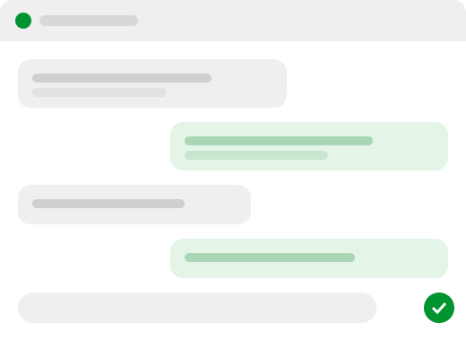

WhatsOn
WhatsOnWhatsON es el software de Whatsapp Marketing más utilizado en todo el mundo.
Miles de negocios lo usan cada día para hablar con sus clientes y vender más. Aquí están las respuestas que más nos piden: cuál es la herramienta que aconsejan, cómo usar el panel desde el PC, cómo enviar mensajes con nombre y qué pasa si tu contacto pide la baja.
Si tu negocio era de los que mandaban la misma plantilla a todo el mundo, esta es la forma corta de dejarlo de hacer: este FAQ recoge las dudas que llegan por WhatsApp y por correo. Cuando la lista crece el panel sigue siendo escalable, y las estrategias que sirven para una tienda de barrio sirven igual para una cadena: un gimnasio de fitness, una tienda para perros —sí, un dogo con abrigo— y una agencia de viajes usan exactamente las mismas herramientas.
Lo atiende el CEO de una empresa pequeña sin ayuda de nadie, y también equipos de veinte personas. No existe un límite de campañas y no hace falta un informático: el resultado, la primera vez, suele ser espectacular.
RESPUESTAS CLARAS, SIN LETRA PEQUEÑA

Preguntas Frecuentes
Abre la pregunta que te interese: la respuesta se despliega aquí mismo.
Si tu pregunta no está aquí, escríbenos: la información que nos envíes se guarda como dato ingresado y la respuesta es inmediata en horario de oficina. Puede interesar a otros usuarios, así que la añadimos a esta lista para mantener el contenido al día y mejorar cada respuesta. Trabajamos con clientes de México y de toda la región, con envíos masivos revisados por nuestro equipo, y cuidamos los marcos legales de cada país: el medio de contacto que elijas y el momento del día importan, y no queremos que les llegue nada fuera de lugar.
Pedir una demo Ver los planes Seguir leyendo Abrir el panel
El motor de envíos es el mismo en todos los planes y su nivel de detalle se ve en los reportes: muchos clientes lo usan a diario y nuestras oficinas de Bogotá atienden en español. Cada mes publicamos nuevas plantillas y una nueva versión del panel; nuestros textos se pueden editar en negrita o en cursiva desde el editor. La opción de la vista mundial te deja ver el estado de todos los países, incluido Mexico, y el histórico de entregas.
más dudas... Pulse en el icono de Whatsapp y se las resolveremos.
Escríbenos y te contestamos por el mismo canal que usas con tus clientes: respondemos de lunes a viernes, en horario laboral.
WhatsON lo distribuye MyBusiness desde Colombia. Si quieres comunicarnos algo, o necesitas ayuda con la comunicación de tus campañas, el WhatsApp del panel es el canal más rápido, igual que el correo electrónico. El equipo creativo revisa cada contenido que se sube y, si encuentras un defecto en una plantilla, la corregimos sin coste; la cursiva y las negritas se respetan tal como las escribes.
Antes de la contratación puedes probar el panel 30 días. El copyright del contenido que subes sigue siendo tuyo y el distribuidor autorizado de tu país emite la factura con los impuestos locales.
Antes de empezar, tres avisos
Todo está en la base que importas: si un contacto está cerrado o pidió la baja, el sistema no lo vuelve a incluir. Ningún cliente recibe dos veces el mismo mensaje.
Las variantes y el reparto ayudan a aumentar la entrega. Un número apagado no se usa hasta que se revisa, y el jefe de operaciones decide quién entra al panel.
Dejamos un aviso en el blog antes de cada cambio de precio. Si estás adquiriendo el plan al mismo tiempo, escríbenos y lo revisamos contigo.
Únete a los cientos de emprendedores que multiplican sus ventas con WhatsOn
Cada campaña deja su reporte de envíos: así sabes qué funcionó y qué no.
Más respuestas
Un mensaje con nombre y contexto recibe respuesta.
Menos tiempo
El chatbot contesta lo repetido y tu equipo entra en lo que importa.
Todo medido
Cada campaña deja su reporte de envíos.
Lo que dicen quienes ya lo usan
«Lo instalé para mi tienda y en la primera semana envié a mis 4.000 contactos. No hay que ser informático: el sistema genera la lista, quita los números repetidos y avisa de lo que falta.» María Hernandez, distribuidora en Bogotá.
Mi equipo lo usa a diario y es extremadamente simple. Es un gran cambio para un grupo pequeño de ventas: el panel reparte los mensajes entre mis asesores y yo veo los avisos en el móvil.
«Lo que más me sirve es el CCO del reporte: recibo copia de cada campaña sin exponer los números de los clientes. Antes lo hacíamos a mano y era indispensable tener a alguien pendiente del Excel.» Andrés Guerrero, agencia de viajes.
Hay grupos de clientes que responden mejor por la mañana; el panel lo aprende y programa los envíos a esa hora, así que hay más respuestas con el mismo esfuerzo.